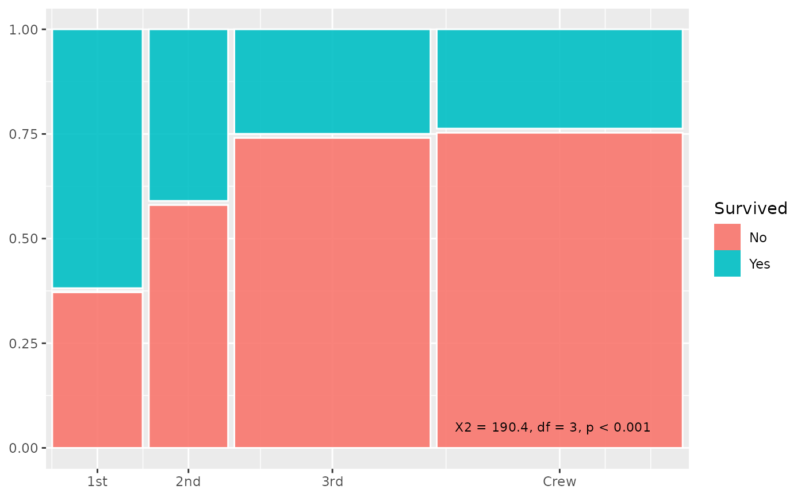

Annotate a Marimekko plot with a chi-squared test
annotate_chisq.RdAnnotate a Marimekko plot with a chi-squared test
Usage
annotate_chisq(
data,
x,
fill,
weight = NULL,
pos_x = 0.95,
pos_y = 0.05,
size = 3,
hjust = 1,
...
)Arguments
- data
A data frame.
- x
Name of the categorical x variable (unquoted or string).
- fill
Name of the categorical fill variable (unquoted or string).
- weight
Name of the weight variable (unquoted or string), or
NULLfor unweighted counts. DefaultNULL.- pos_x
Numeric x position for annotation. Default
0.95.- pos_y
Numeric y position for annotation. Default
0.05.- size
Text size. Default
3.- hjust
Horizontal justification. Default
1.- ...
Additional arguments passed to
ggplot2::annotate().
Examples
library(ggplot2)
titanic <- as.data.frame(Titanic)
ggplot(titanic) +
geom_mekko(aes(x = Class, fill = Survived, weight = Freq)) +
scale_x_mekko() +
annotate_chisq(titanic, Class, Survived, weight = Freq)
